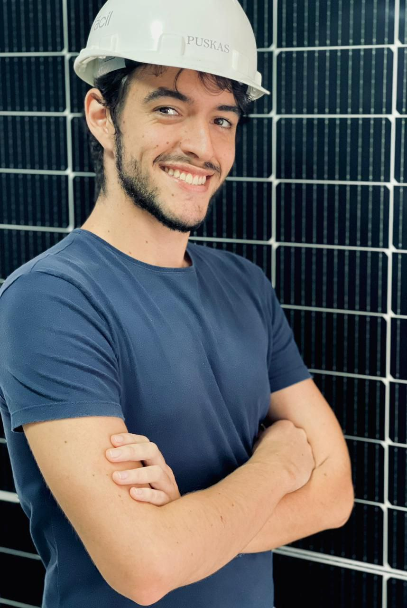

Lucas Costa Barreto de Melo
Este sou eu

O que sou?
- Estudante de Desenvolvimento Full Stack na Trybe
- Engenheiro de Energias pela UFPB
- Yellow Belt em Lean Six Sigma
Linkedin.
Sobre mim
Um baiano de Salvador-BA perdido em terras paraibanas, atualmente em um lugarzinho chamado João Pessoa-PB.
Apaixonado pela cultura nerd/geek, por tecnologia e ansioso pelas próximas invenções da humanidade.
Meus objetivos
Além de sonhar todos os dias em ir à Lua, estou em processo de transição de carreira para a área de Desenvolvimento Web.
Habilidades das quais me orgulho
- Ótima interação em grupo
- Empatia pelo próximo
- Sede insaciável por conhecimento
Formação acadêmica
- Bacharelado em Engenharia de Energias Renováveis pela Universdade Federal da Paraíba-UFPB (2014-2022)
- Desenvolvedor Full Stack pela Trybe (2023-2024)